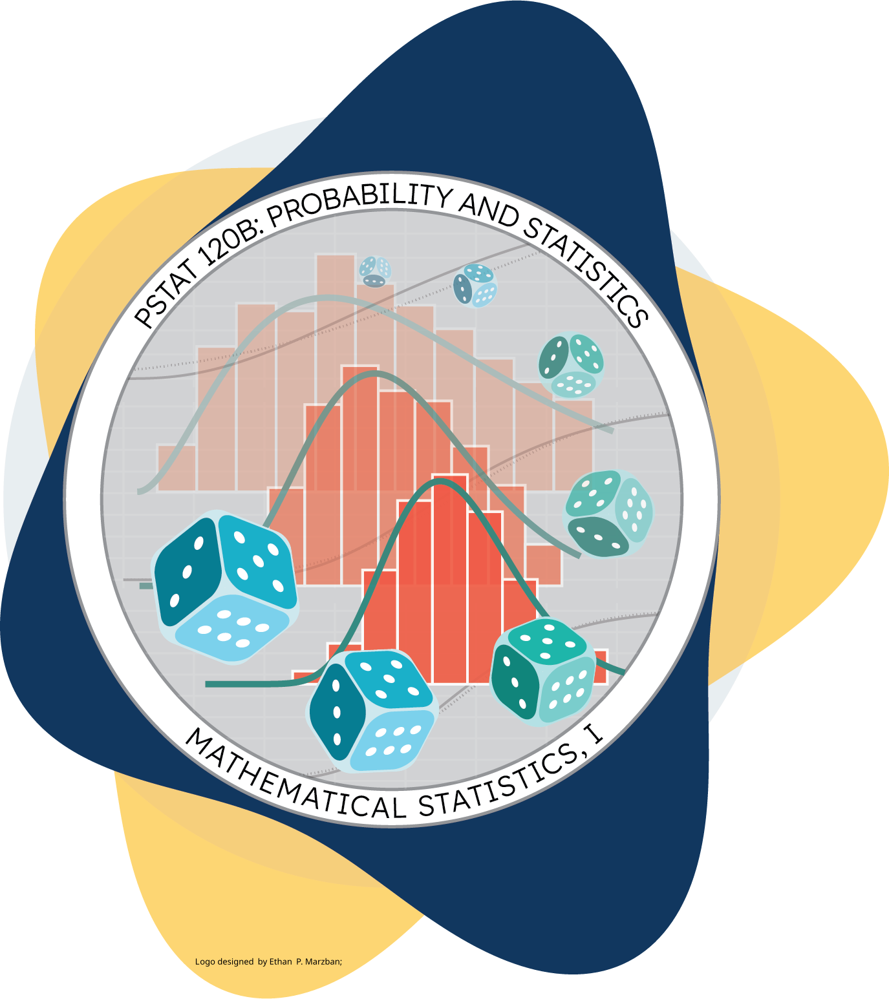

Ethan’s Week 9 Discussion Section
Department of Statistics and Applied Probability; UCSB
March 4, 2026
\[ \newcommand\R{\mathbb{R}} \newcommand{\N}{\mathbb{N}} \newcommand{\E}{\mathbb{E}} \newcommand{\S}{\mathbb{S}} \newcommand{\Prob}{\mathbb{P}} \newcommand{\F}{\mathcal{F}} \newcommand{\1}{1\!\!1} \newcommand{\comp}[1]{#1^{\complement}} \newcommand{\Var}{\mathrm{Var}} \newcommand{\SD}{\mathrm{SD}} \newcommand{\vect}[1]{\vec{\boldsymbol{#1}}} \newcommand{\tvect}[1]{\vec{\boldsymbol{#1}}^{\mathsf{T}}} \newcommand{\hvect}[1]{\widehat{\boldsymbol{#1}}} \newcommand{\mat}[1]{\mathbf{#1}} \newcommand{\tmat}[1]{\mathbf{#1}^{\mathsf{T}}} \newcommand{\Cov}{\mathrm{Cov}} \DeclareMathOperator*{\argmin}{\mathrm{arg} \ \min} \newcommand{\iid}{\stackrel{\mathrm{i.i.d.}}{\sim}} \]
A Quora post claims that the average cat has about a 10% chance of being born with polydactyly
Suppose we wish to assess the validity of the Quora claim, using data.
Say we take a sample of 100 cats, and find 9 of them to be polydactyl (\(\widehat{p}\) = 9%).
Does this provide concrete evidence that the Quora claim is incorrect? Not really!
Say, instead, our sample of 100 cats hat 80 polydactyl cats (\(\widehat{p}\) = 80%).
Now what do we think - are we starting to question the Quora statistic? Probably!
So, somewhere between \(\hat{p}\) = 9% and \(\hat{p}\) = 80% we start to question the Quora statistic. Where is that cutoff?
We start off with two competing claims, the null hypothesis (denoted H0, and read “H-naught”) and the alternative hypothesis (denoted HA)
We then assume the null is true, and try and see if that leads us to any strange conclusions/contradictions (in which case we “reject the null in favor of the alternative”).
Typically, the null is the “status quo”, and is often of the form H0: θ = θ0 for some parameter θ and some null value θ0
Given a null H0: θ = θ0, three main alternative hypotheses become available:
In a given real-world setting, it is up to us to pick one of these.
Note: it is very important that the null and alternative hypotheses don’t have any overlap.
\[ \texttt{decision}(\texttt{data}) = \begin{cases} \texttt{reject null in favor of alternative} & \text{if ...} \\ \texttt{f.t.r. null in favor of alternative} & \text{if ...} \\ \end{cases} \]
Of course, there is the question of when our test rejects/fails to reject the null!
Typically, the set of all data values for which we reject the null is called the rejection region
To construct the rejection region, we need to take a step back.
Our test either rejects or fails to reject the null.
Separately, the null is either true or not.
This leads to four states of the world:
| Result of Test | |||
| Reject | Fail to Reject | ||
| H0 | True | ||
| False | |||
| Result of Test | |||
| Reject | Fail to Reject | ||
| H0 | True | BAD | GOOD |
| False | GOOD | BAD | |
| Result of Test | |||
| Reject | Fail to Reject | ||
| H0 | True | Type I Error | GOOD |
| False | GOOD | Type II Error | |
Definition: Type I and Type II errors
A common way of interpreting Type I and Type II errors are in the context of the judicial system.
The US judicial system is built upon a motto of “innocent until proven guilty.” As such, the null hypothesis is that a given person is innocent.
A Type I error represents convicting an innocent person.
A Type II error represents letting a guilty person go free.
Viewing the two errors in the context of the judicial system also highlights a tradeoff.
If we want to reduce the number of times we wrongfully convict an innocent person, we may want to make the conditions for convicting someone even stronger.
But, this would have the consequence of having fewer people overall convicted, thereby (and inadvertently) increasing the chance we let a guilty person go free.
As such, controlling for one type of error increses the likelihood of committing the other type.
\[ \texttt{decision}(\texttt{data}) = \begin{cases} \texttt{reject null in favor of alternative} & \text{if ...} \\ \texttt{f.t.r. null in favor of alternative} & \text{if ...} \\ \end{cases} \]
\[ T := \frac{\bar{X} - \mu_0}{1 /\sqrt{n}} \stackrel{H_0}{\sim} \mathcal{N}(0, 1) \]
\[ \texttt{decision}(X_1, \cdots, X_n) = \begin{cases} \texttt{reject null} & \text{if } \left| \frac{\bar{X} - \mu_0}{1/\sqrt{n}} \right| > k \\ \texttt{f.t.r.} & \text{otherwise} \\ \end{cases} \]
The final piece of the puzzle is to figure out what the critical value k should be.
Recall that we are fixing this test to have a level \(\alpha\), meaning \[\begin{align*} \class{fragment}{{} \alpha} &\class{fragment}{{} := \Prob(\text{Reject $H_0$} \mid \text{$H_0$ true}) } \\[3px] &\class{fragment}{{} := \Prob\left( \left| \frac{\bar{X} - \mu_0}{1/\sqrt{n}} \right| > k \ \middle| \ \mu = \mu_0 \right) } \class{fragment}{{} = 2 \left[ 1 - \Phi(k) \right] } \\[3px] \class{fragment}{{} \implies k } &\class{fragment}{{} = \boxed{\Phi^{-1}\left(1 - \frac{\alpha}{2}\right)} } \class{fragment}{{} =: \boxed{z_{1 - \frac{\alpha}{2}}} } \\[3px] \end{align*}\]

PSTAT 120B - Winter 2026 with Dr. Annie Qu; material © Ethan P. Marzban